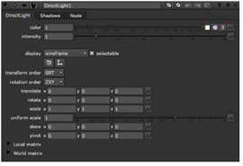

A direct light is a light that emits parallel light in one direction. It appears to illuminate all objects with equal intensity, as if it was coming from a far away source. Being at an infinite distance from the objects, direct light has orientation, but no position. A real world example of a direct light is the sun. You can use direct light to simulate sunlight and moonlight, for example.
| 1. | Select 3D > Lights > Direct to insert a DirectLight node in your script. |
| 2. | Connect the DirectLight node to the Scene node. |
| 3. | In the DirectLight node’s controls, adjust the following: |
• Drag the color slider to change the light color.
• Drag the intensity slider to change the brightness of the light.
• To control the direction of the light, enter values in the rotate fields.

• To adjust the settings for shadows, change values for the controls on the Shadows tab. For more information on these controls, see Casting Shadows.
|
|